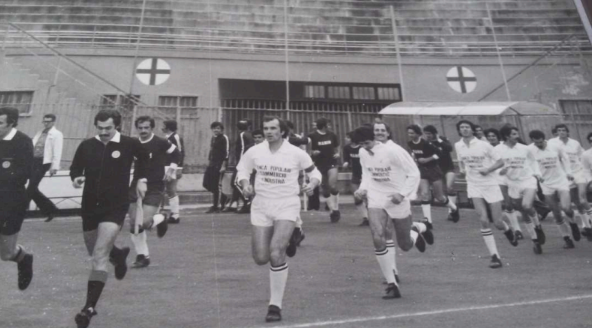
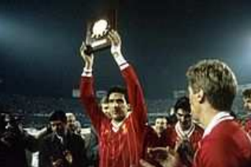

Racconti di vita vissuta
- Prefazione
- La quarta Compagnia
- Capitano Pantanelli
- Il Torneo che ti cambia la Vita
- Gli Anni di Piombo
- Il solista del Mitra
- A letto senza frutta
- Un arbitro internazionale
- Gaetano Scirea
Nell’arco di tanti anni, nei momenti immediatamente successivi agli avvenimenti, mi sembrava doveroso scrivere degli appunti per poi ricordare con realtà gli accadimenti. Penso sia il minimo che si possa chiedere a chi ricorda, di non dire bugie.
Renato Aresi
Orvieto lì, 4 agosto 1964
All’alba del quarto giorno di agosto, la mia persona, colpevole solo d’essere un uomo perciò soggetto alla Legge del servizio militare obbligatorio, saliva, dopo aver salutato le persone più care, sul treno che lo avrebbe condotto in un paese chiamato ORVIETO, che fino a quel momento mi era sconosciuto; ne avevo sentito parlare solo come sede della prima destinazione della Compagnia Addestramento Reclute.
Il viaggio fu assai lungo ma abbastanza tranquillo, io guardavo dal finestrino il passare di città di grande importanza storica e commerciale, pensando già a quanto avrei raccontato al mio ritorno a casa, immaginando la fine di quell’avventura, che in verità doveva ancora cominciare.
Giunsi finalmente verso le prime ore del pomeriggio in una piccola stazione ai piedi di una collina; su un enorme cartello sproporzionato al piccolo edificio che lo reggeva, si leggeva a caratteri cubitali la scritta “ORVIETO”.
Scesi con la piccola borsa riempita dalla biancheria personale, convinto di poter visitare la città da turista almeno fino alla sera ma, quando il treno ripartì, mi guardai attorno e vidi fermi sul marciapiede della stazione ragazzi della mia età che mi assomigliavano nell’abbigliamento, non facemmo nemmeno in tempo a scambiarci dei commenti quando tre uomini in divisa grigioverde ci presero in consegna e commentando con battute e sorrisi nei loro coloriti dialetti, ci accompagnarono in cima a quella grande collina dove sorgeva la maestosa caserma “PIAVE” che poi sarebbe diventata per due mesi la mia dimora.
Quando mi ritrovai “inquadrato” nel mezzo del cortile in attesa di dare le mie generalità, vidi e sentii il frastuono dei plotoni di reclute giunte nei giorni precedenti che facevano esercitazioni, che marciavano compatti con i caporali istruttori che a voce scandivano il passo, poi passai davanti alla commissione selettiva che mi assegnò alla 4° Compagnia, cioè alla Compagnia Atleti.
Quella della 4° Compagnia Atleti era qualcosa di noto nel mondo del calcio, si parlava di privilegi, di permessi per partecipare ad allenamenti ed a gare ufficiali .....
Queste dicerie erano vere solo in parte, tutto questo poteva avvenire solo dopo aver terminato i due mesi dell’addestramento e solo per un numero limitato di atleti.
Solo a fine settembre le società “proprietarie del cartellino” del giocatore, dopo aver fatto le valutazioni in funzioni delle necessità della loro prima squadra, per acconsentire il trasferimento del giocatore ad una delle caserme di sede (BOLOGNA o ROMA), dovevano pagare una cifra rilevante per poter usufruire dei “noti privilegi” quindi era un percorso “riservato a “pochi”.
I “pochi”, cioè i più noti, erano quelli balzati sulla cronaca sportiva per aver già fatto passerella sui campi della massima serie, in quell’agosto del 64’ in ordine d’importanza: il “golden boy” del cacio italiano, GIANNI RIVERA del Milan (il quale aveva già partecipato al mondiale del 62’ in Cile), GUIDO POSTIGLIONE (centravanti del Napoli) SPARTACO LANDINI (stopper della “grande” Inter di Herrera) ROBERTO BONINSEGNA (era solo una potenziale promessa dell’Inter, dato in prestito al Potenza) DAL MONTE, BISSACCO e VALERI (con qualche gara in prima squadra alla Sampdoria) ROMANO CAZZANIGA (della Pro Patria in prestito al Poggibonsi, poi portiere del Monza e del Torino) e poi.....
Una sessantina di giovani calciatori tesserati per società di serie A e B che nella stagione sportiva precedente erano stati impiegati nella categoria “DE MARTINO” furono valutati per le loro capacità sportive e dirottati alle varie scuole specialistiche.
La mia destinazione la decise il Maresciallo responsabile della Fureria di Orvieto che esaudì una richiesta del Comandante della Scuola Allievi Ufficiali e Specialisti d’Artiglieria di Civitavecchia il quale ricopriva la carica di Vice Presidente della locale squadra di calcio partecipante al campionato di Quarta Serie l’attuale Serie D. il Capitano PANTANELLI . . . . . .
Civitavecchia lì, 1 novembre 1964.
Alla periferia di questa città sorge la “Scuola di Artiglieria Allievi Ufficiali e Allievi Specialisti”, a cui sono stato destinato in qualità di allievo specialista, un ampio ingresso, un immenso cortile e decentrata la prigione, una esperienza che avrei preferito non fare ma che sono stato “costretto” a visitare. Nel tragitto per arrivarci mi colpì lo sguardo dei miei compagni affacciati come galeotti alle sbarre, chi ammutolito e depresso e chi invece spavaldo e dallo sguardo di sfida forse sereno per aversi tolto qualche soddisfazione ma.....veniamo a quanto mi riguarda.
Era domenica mattina, anzi la prima mattina di novembre, alle sette e ventisette minuti passai anch’io quella soglia, dopo che il sergente d’ispezione con tanto di chiave mi aveva aperto la porta; quando la rinchiuse, ebbi una brutta impressione, forse l’avevo . . . . . . . . . combinata grossa!
Solo allora capii che non si trattava più di un gioco, l’allievo specialista RENATO ARESI nonché calciatore della squadra di calcio della città, in possesso di un permesso giornaliero per la gara di campionato Civitavecchia - Marino, uno dei “pupilli” del temuto capitano PANTANELLI (vice presidente della società), senza sigarette e senza giornali con in dotazione solo una sudicia coperta dell’esercito ed un tavolaccio in pendenza, veniva privato della libertà e - quel che più grave - della possibilità di scendere in campo in una gara ufficiale.
E’ vero che avevo “animatamente” cercato di spiegare, davanti ai miei compagni, ad una “firma” di sergente di giornata sventolandogli in faccia il permesso, che l’emergenza in atto a tamponare lo scoppio di una tubatura in camerata, non poteva certo riguardare la mia persona, ma doveva riguardare gli addetti alla pulizia!
Il capitano PANTANELLI era il comandante della Scuola Allievi Ufficiali e della Scuola Specialisti, rigoroso e preparato ma temutissimo da tutti per la sua severità, pensate che alcuni giorni prima aveva punito con 10 giorni di camera di punizione di rigore (C.P.R.) un allievo ufficiale che si era permesso durante un intervallo di una esercitazione in cortile, di puntare il fucile scarico in direzione di un aereo di linea che transitava in alta quota, mimando di tirare il grilletto ed emettendo a bassa voce “pum-pum”, come se lo sparo fosse realmente avvenuto.
La motivazione della punizione esposta in bacheca era la seguente: “Puntava l’arma contro un aereo di linea in transito, con l’evidente intenzione di abbatterlo”.
Il capitano PANTANELLI era anche un grande tifoso di calcio, il suo
incarico nella società Civitavecchia iscritta al campionato di Quarta Serie
(l’attuale serie D) era di Vicepresidente.
Ai diversi giocatori che venivano destinati alla scuola specialisti
(ovviamente non a quella allievi ufficiali) veniva proposto la possibilità di
accedere ad un prestito militare che allora era obbligatorio, così da poter
continuare l’attività nella stagione sportiva in corso; questo avvenne sia per
me (prestito Monza) e sia per l’allievo specialista MAZZOCCO (prestito
Vicenza).
Il capitano PANTANELLI era anche il docente del nostro corso specialistico “Osservatore Rilevamento Vampa” con tutte i benefici immaginabili che a noi potevano derivare, in primis la possibilità per tre pomeriggi (martedì, mercoledì e venerdì) di partecipare alle sedute d’allenamento, (uscita alle 13.30 e rientro dopo la cena al ristorante per le ore 24.00), ed il permesso per l’intera giornata di domenica per le gare interne e per le trasferte addirittura il “36 ore” cioè dal sabato pomeriggio.
Il capitano PANTANELLI era molto pignolo nell’abbigliamento, pretendeva da parte degli allievi il massimo ordine nell’indossare la divisa, mi aveva “ripreso bonariamente” prima di una lezione perché avevo la cravatta slacciata (mi aveva anche sistemato il nodo) in netto contrasto con l’atteggiamento del giorno prima, quando con la medesima situazione aveva consegnato per giorni quindici il malcapitato di turno.
Il capitano PANTANELLI era sposato senza figli, sua moglie era nota in città per aver partecipato ad un concorso di Miss Italia.
I coniugi PANTANELLI erano soliti frequentare per il tradizionale aperitivo del sabato sera, il ritrovo “bene” in centro, quando eravamo in possesso del “36 ore” io e MAZZOCCO (entrambi indossando la “curata” divisa da libera uscita) prima di recarsi al ristorante (avevamo i “buoni cena” pagati dalla società) volutamente attraversavamo l’ampio salone del locale tanto da incrociali e porgerli scattando sull’attenti il classico saluto militare, attirando così l’attenzione dei numerosi loro amici presenti, il commento del capitano era il seguente “ sono i miei ragazzi, bravi allievi e ottimi giocatori”.

Il capitano PANTANELLI non si fece “vivo” per tutta la giornata e . . . soltanto il lunedì, a metà mattina mi fecero uscire dalla prigione di rigore per scortarmi nell’ufficio della palazzina comando.
Il capitano PANTANELLI mi attendeva con fare molto serio, dopo una pausa voluta, che a me sembrò lunghissima, mi comunicò un elenco d’imputazioni e di infrazioni ad articoli di comportamento che mi avrebbero potuto comportare anche una denuncia e in caso di condanna anche il trasferimento al carcere militare di GAETA.
Il capitano PANTANELLI, mi lasciò in piedi nel suo ufficio mentre lui si occupava e sbrigava altre faccende, poi uscì. Io mi guardai bene dal fare gesti d’insofferenza o dal porgere domande, fermo nella situazione di “riposo”, aspettavo . . . . . . . . . .
Il capitano PANTANELLI quando rientrò dopo un’ora abbondante e fingendo sorpresa esclamò “ma sei ancora qui . . . sparisci, ricordati che la mancata vittoria di ieri è soprattutto colpa tua”.
Uscii velocemente dopo aver salutato e mi recai di corsa al bar della caserma ad acquistare il giornale con la cronaca della gara che iniziava così:
Civitavecchia-Marino 0-0
La squadra di casa perde una grossa occasione per migliorare l’alta classifica, Mister GIANSANTI recrimina per le assenze della punta PORCHIANELLO squalificato e del centrocampista ARESI che riprenderà solo martedì, dopo un lieve infortunio.
Lunga vita al CAPITANO . . . . . . . . . . . . .
Palazzolo sull’Oglio lì, un venerdì di metà giugno 1976.
Tutto iniziò a fine gennaio del 1975 quando MARIANO SCACCIA, un noto personaggio del calcio professionistico di allora, paragonabile ai più quotati procuratori di oggi, mi “ingaggiò” come giocatore della squadra della Banca Popolare Commercio Industria con sede a Milano, via Moscova 33, che partecipava al campionato UISP serie A aziendale, con MARIANO avevo partecipato e vinto numerosi campionati (cinque con la SIRTI) tornei di prestigio (quello della stampa con finale allo stadio di SAN SIRO) e vari tornei serali su campi ridotti come ISOBELLA, SCARIONI e RAMAZZOTTI.
Al termine della prima stagione (1974-75) il risultato sportivo della squadra non fu esaltante, migliorativo rispetto al precedente ma ancora lontano dagli obiettivi prefissati dai vertici della banca, cioè vincere!
A livello personale fui gratificato sia economicamente sia moralmente,
tanto che il Direttore del Personale il signor SAVOLDI (con funzione di
Presidente della squadra) mi offrì la possibilità di essere assunto; da parte
mia ci fu un cortese rifiuto ma acconsentì a continuare la collaborazione
agonistica da esterno.
La stagione sportiva 1975-76 fu un susseguirsi di successi sportivi e
personali, la squadra vinse sia il Campionato e sia il prestigioso Torneo di
Palazzolo, ero praticamente uno di loro, fui indicato come uno dei
protagonisti, capitano ufficiale in campo, e primo collaboratore nelle scelte
tecniche.
Al termine della gara, finalissima del Torneo (riservato esclusivamente ai dipendenti, sic!) con la vittoria 2 a 1 contro la Banca Popolare di Lecco, prima della cerimonia della premiazione ufficiale, mi fu ricordato che dovevo mantenere un comportamento da dipendente, pena la possibilità di reclamo da parte degli sconfitti con l’eventuale squalifica della squadra.
La premiazione avvenne sul campo, tutto si concluse nel modo migliore, alla precisa domanda risposi “commesso di cassa” ritirai la coppa e con tutti i componenti del seguito ci trasferimmo in un noto ed esclusivo ristorante della zona dove i festeggiamenti proseguirono fino alle ore piccole, prima di congedarmi mi fu fissato un appuntamento per il lunedì successivo presso la sede con il Capo del Personale.
Era un lunedì di fine giugno, caldo afoso, mi presentai vestito in modo sportivo, camicia stile militare color ghiaccio, senza cravatta, con pantaloni chiari, con scarpe di ginnastica . . . un classico per un calciatore!
Mi ricevette il rag. GUIDO GRIFFINI il funzionario capo dell’Ufficio Contabilità primo tifoso e primo sostenitore della squadra, dopo i convenevoli d’uso, s’infilò la giacca, si posizionò la cravatta, mi allacciò un bottone della camicia e mi accompagnò nell’ufficio del Direttore del Personale, il quale mi convinse (sic!) ad accettare l’offerta fatta in un recente passato.
- “Anch’io sono stato assunto come commesso, non ti devi preoccupare, da noi l’assenza di un diploma non vincolano le possibilità di carriera” e mi consegnò la lettera di assunzione.
Inizio della nuova avventura, 15 settembre 1976.
Aggiunse dopo i saluti “. . . ah dimenticavo . . guarda che ti verranno a
“rompere” i sindacati, questa sigla è di destra, e questa di sinistra, questa è la
FABI dove siamo iscritti tutti noi, buon lavoro” . . . . .
Questo si chiama: parlare chiaro!!!!!!!!!
In data 1 giugno 1977 era stato colpito il direttore del Secolo XIX Vittorio Bruno, il giorno dopo 3 giugno il direttore del TG1 Emilio Rossi.
2 giugno 1977
“Siamo le BRIGATE ROSSE abbiamo colpito il servo dello Stato” - così le BR rivendicano l’attentato al Corriere della Sera.
Milano lì, 2 giugno 1977
Doveva essere una giornata lavorativa normale, presso la Banca BCI sede, ubicata in via della Moscova 33, la solita routine di ogni mattina con gli adempimenti che comportano il mio lavoro di commesso, al pomeriggio tanta applicazione sulla possibilità di crescita che mi è stata offerta, imparare il mestiere di cassiere.
Di prima mattina esco per l’incasso dei vaglia presso l’ufficio postale di via Moscova e poi mi devo recare per un chiarimento su una visura catastale all’Ufficio del Registro.
All’ufficio postale c’è gente, lascio i vaglia avendo l’assicurazione che dopo circa un’ora mi avrebbero fatto trovare pronto il pagamento in assegni.
“Un’ora libera e non sono materialmente in possesso di valori, quindi rischio zero, mi posso permettere . . .”
Di fare una visita di cortesia al signor Johnny Colombo Presidente degli Albergatori e proprietario dell’Albergo Manin che prende il nome della omonima via, poco distante da piazza Cavour, proprio a pochi minuti.
Il signor Colombo è anche il Presidente di una squadra di calcio con il quale ho instaurato un rapporto di collaborazione e di stima reciproca, tra le sue conoscenze ci sono anche dirigenti della banca in cui lavoro e probabilmente in più occasioni ha parlato bene di me.
All’inizio di piazza Cavour l’ululato di una sirena, oramai in città nessuno si meraviglia più di tanto, mi avverte che un mezzo di soccorso o delle forze dell’ordine chiede strada, sfreccia una Fiat 128 verde pisello senza che nessun particolare indica che si tratti di un auto civetta.
Proseguo e appena entrato in via Manin noto sul marciapiede opposto, quello che confina con i giardini pubblici, due persone, una seduta e pallidissima con le mani protese sulle gambe e l’altra che cercava di sostenerlo per le spalle.
E’ l’ennesimo attentato, il malcapitato di turno è il direttore de “Il Giornale” INDRO MONTANELLI.
Chiedo alla persona che lo sorregge se posso essere utile e nel frattempo calpesto e raccolgo alcuni bossoli nei paraggi, mi comunica che già qualcuno si è reso disponibile per chiedere soccorso e mi invita a fare la stessa cosa, aggiungendo che era buona cosa non toccare.
Proseguo verso l’Hotel e mi accorgo che all’ingresso tra le altre persone c’e’ il signor Johnny Colombo il quale mi avverte che è al corrente del fatto e che ha già provveduto ad avvisare per i soccorsi, mi invita al bar e mi offre l’aperitivo, i nostri discorsi si soffermano sui fatti del momento e poi si allargano a quelli inerenti a quelli sportivi a cui siamo coinvolti.
Dopo circa mezz’ora lascio l’Hotel e il tragitto di ritorno è obbligato, la via Manin è chiusa al traffico il passaggio dei pedoni e limitato ad un solo marciapiede, è tutto transennato dove operano muniti di guanti gli specialisti della Polizia Scientifica, ogni bossolo è evidenziato con una sigla ed un numero, altri effettuano misurazioni, altri scattano fotografie.
A distanza di tempo ho un senso di colpa per aver spostato e toccato dei bossoli, . . . meno male che il RIS di Parma e la ricerca del DNA ancora non erano così attuali !!!! .
Milano lì, un martedì di fine agosto dell’anno 1977.
A distanza di circa un anno, l’offerta fatta dai vertici della Banca si era concretizzata, avevo raggiunto il primo obiettivo che mi ero proposto, dopo mesi di “gavetta” come commesso e tanta applicazione come aspirante cassiere, avevo maturato quasi tre mesi di esperienza come terzo cassiere nel salone della Sede.
Dalla metà del mese di luglio ero titolare alla postazione dello sportello “Cassa Cambiali” del salone della BANCA POPOLARE COMMERCIO & INDUSTRIA sede di via della Moscova 33, ubicata in zona “Brera” nel centro di Milano, proprio davanti alla sede del Corriere della Sera.
Era un martedì di fine agosto, la classica giornata di stanca, non era ancora iniziato il massiccio rientro dopo l’esodo agostano, un anziano signore si presenta allo sportello per pagare una cambiale, capelli ricci bianchi, parlata in milanese, esamino attentamente l’avviso di scadenza “15 agosto pagabile presso la filiale di Como” avverto il simpatico cliente che purtroppo l’effetto si poteva pagare solo nella “nostra” di Como, ma aggiungo che oramai erano scaduti i termini, quindi probabilmente l’Ufficiale Giudiziario se ancora non l’avesse fatto, stava procedendo al protesto del titolo.
Il personaggio non si scompone ma con calma apparente e quasi sottovoce con un misto di italiano/dialetto - “so già tutto, ma la devo assolutamente pagare, anca se l’è stada prutestada, mi hanno riferito che l’an mandada chi, da voialter”.
Poi con timbro di voce serio e alzando le due mani per evidenziare il proprio viso - “non mi riconosci? Guarda il nome del debitore . . . non me lo posso più permettere di non pagare”.
Pagherò per questa cambiale tratta = lire 500.000= (cinquecentomila) Debitore: LUCIANO LUTRING
Immediatamente scatta il collegamento alla mia memoria, in sequenza:- La condanna all’ergastolo e la grazia del presidente Giovanni Leone il 27 marzo 1977, la partecipazione come ospite alla trasmissione di Maurizio Costanzo “Bontà loro”.
- La prima rapina: compra una vecchia pistola e su incarico della zia si reca alla posta per pagare una bolletta, l’impiegato era lento e per richiamare l’attenzione picchia un pugno sul bancone, l’impiegato nota la pistola che era infilata alla cintura e credendo fosse una rapina gli consegna tutto il contante che aveva in cassa.
- Soprannominato ”il solista del mitra” perché effettuava le rapine in banca da solo e con il mitra nascosto nell’astuccio di un violino.
Ho capito la sua richiesta e con calma apparente rispondo “certo che la riconosco, m’informo cosa posso fare per recuperare il titolo” chiudo la cassa e mi rivolgo al grande capo.
Responsabile di tutti i cassieri della banca, filiali comprese (negli anni settanta era così) è il signor VITTORIO MARCHIORI, la sua scrivania era posizionata al centro dell’ufficio in posizione strategica proprio dietro le tre casse, riusciva ad ascoltare le varie conversazioni tra cassiere e cliente e aveva già pronta la risposta prima che il richiedente di turno ponesse la domanda.
Ma questa volta non fu così. “Sig. Marchiori quel signore allo sportello mi richiede. . . . . – “mandalo a quel paese, digli che si doveva svegliare prima” gli allungo l’avviso di scadenza e aggiungo “però non mi sembra il caso, controlli chi è il debitore” abbassa gli occhiali sugli occhi e. . .
“Forse è meglio che tu chiuda la cassa, salga sopra all’U.C.D. (ufficio corrispondenti diversi) e risolva il problema, ma non lasciarlo qui in salone . . portatelo dietro.”
Me lo porto dietro ma evito di prendere l’ascensore, saliamo le quattro rampe dello scalone che porta ai piani alti, la conversazione è improntata a commentare il suo momento di attualità positiva, mi informa che riesce a fare più soldi con la vendita dei suoi quadri che con le rapine del passato e che l’importo della cambiale era una rata del pagamento dell’albergo sito in BRUNATE ed acquistato per la compagna Yvonne Candy.
Responsabile dell’ufficio U.C.D. è il rag. Danelli il quale ci assicura subito sulla buona riuscita della ricerca, confermando che la cambiale è stata protestata ma che potrà essere pagata in questa sede, poi sarà compito del debitore di farsi togliere la menzione del protesto.
Tutto come previsto, LUCIANO LUTRING estrapola dalla tasca un ingente rotolo di banconote ed effettua il pagamento (spese comprese), scendiamo in salone ci avviciniamo al bancone, porge un doveroso saluto ringraziando il capo VITTORIO MARCHIORI e mi saluta con un “grazie cassiere” e una calorosa stretta di mano.
Come sono cambiati i tempi . . .
Milano lì, un venerdì di fine settembre dell’anno 1977.
Dai primi giorni di settembre dopo due mesi di “servizio” alla cassa cambiali avevo raggiunto un altro obiettivo, operavo come cassiere nella postazione della seconda cassa, era in essere un radicale cambiamento strutturale presso la Banca Popolare Commercio & Industria, con l’apertura in contemporanea di diverse agenzie quindi era necessario identificare nuove figure per ricoprire i ruoli scoperti. Da pochi giorni, lo “storico” e benvoluto da tutti i colleghi, il Capo Cassiere del Salone della Sede, il signor BORELLA, vicino ai requisiti pensionistici chiese e ottenne il trasferimento alla filiale di Cassina de’ Pecchi a pochi chilometri da casa, e liberò il suo posto ambito. Si operò una soluzione interna, il rimpasto mi consentì di fare un passo in avanti, così come DARIO FARE’ che diventò il sostituto naturale nel ruolo di cassiere principale, era un predestinato, la sua esperienza veniva da lontano, spesso ci raccontava – “sono entrato in banca a fare il commesso ancora con i pantaloni corti . . .” .-
DARIO FARE’, era per quei tempi un personaggio anticonformista, occhiali sulla punta del naso con una folta barba incolta che nascondeva una parte del viso, metodico e pignolo con atteggiamenti e comportamenti sopra le righe, esempio: salone affollato di persone e rivolgendosi a voce alta ad una storica cliente –“ . . . mia moglie che lei conosce, è medico, mi ha confermato che anche a 47 anni si può andare in menopausa, non si preoccupi signora” .
DARIO era un pupillo del signor MARCHIORI, era l’unico ad essere chiamato confidenzialmente per nome dal Capo, il quale però non gli perdonava certi eccessi, come ad esempio la scelta dei clienti da servire, esternazioni censurabili e le sue “battute” indirizzati ai malcapitati clienti.
I malcapitati, colpevoli solo di aver compilato in modo errato una parte della distinta di versamento venivano puntualmente redarguiti e poi rimproverati con una frase che ripeteva in continuazione durante la giornata – “e . . . questa sera a letto senza frutta”.
E veniamo al fatto del giorno, era un venerdì di fine settembre dell’anno 1977, da qualche settimana DARIO FARE’ operava nel nuovo e migliorativo incarico assegnatogli, il tanto sognato ruolo di cassiere principale l’aveva illuso di poter fare una cernita sia dei clienti da servire e sia quelli da “girare” alle altre casse.
Dopo l’ennesima frase rivolta al cliente distratto nella compilazione della distinta, il signor MARCHIORI approfittando di una momentanea assenza di persone allo sportello, gli manda un chiaro avvertimento e lo pungola con ironia - “ DARIO basta, sei ripetitivo . . . anche l’ARESI e il GATTI non ti sopportano più . . . . aspettati qualcosa di poco piacevole anche dagli altri....“ Chiaro messaggio recepito da tutti.
Siamo a pochi minuti dell’orario di chiusura, nel salone entra una cliente speciale, a quel tempo personaggio di primo piano della televisione, la valletta di MIKE BONGIORNO nella trasmissione di successo “IL RISCHIATUTTO”, la signora SABINA CIUFFINI che operava come correntista essendo contitolare di un noto ristorante della zona.
Le sue venute creavano un certo scompiglio, a quei tempi l’iter da effettuare era il seguente: presentarsi all’ufficio Riscontro ubicato alla destra dell’ampio ed elegante salone per poi trasferirsi sulla sinistra nella zona delle Casse in attesa poi di essere chiamati per completare l’operazione.
L’operazione bancaria veniva “lavorata” dagli impiegati del “riscontro” ed il cartaceo inserito in una busta che veniva trasportata tramite una “catena di trasmissione” che percorreva l’intero tragitto all’interno del bancone fino a giungere in cassa, a turno i cassieri rispettando l’ordine di arrivo chiamavano i clienti per completare l’operazione.
La signora CIUFFINI dopo aver terminato l’adempimento della consegna all’ufficio Riscontro era solita effettuare una vera e propria “passerella” nel salone, nel frattempo il nastro trasportatore portava la sua operazione alle casse.
Al terminal del nastro trasportatore, era “vigile” come al solito il DARIO FARE’ che si appropriò della PRIMA busta arrivata convinto che fosse quella giusta contenente l’operazione del cliente ma una “mano organizzata” la sostituì con un biglietto chiarificatore, io aprii VELOCEMENTE la seconda busta e chiamai – “signora CIUFFINI prego” completando l’operazione e commentando con lei gli avvenimenti dell’ultima puntata.
Tutti gli occhi dei colleghi erano però puntati su DARIO FARE’ il quale lesse ed immediatamente accartocciò e butto nel cestino il foglio contenuto nella busta che aveva frettolosamente arraffato, che diceva:
AHI AHI SIGNORA LONGARI . . . .DARIO, STASERA A LETTO SENZA FRUTTA!!
Era chiaramente una CONGIURA per censurare i suoi comportamenti e
da allora capì . . . . . . . che le cose erano cambiate.
E si adeguò!
Sellia Marina, metà giugno 1994.
La mia sede di lavoro alla Banca Popolare Commercio & Industria è oramai consolidata nella Filiale della cittadina di Arcore nota alle cronache per la residenza di Silvio Berlusconi.
L’incarico di “responsabile dei servizi bancari” che svolgo con applicazione, comporta oltre alla gestione del personale la disponibilità di proporre e di instaurare un cordiale e fiduciario rapporto con i clienti.
Tra questi, particolare è quello con il signor Rovelli presidente di una società di calcio ubicata sul territorio la Vimercatese che partecipa al campionato dilettanti di “Eccellenza” ma anche titolare della agenzia “Barbara Viaggi”, il quale da anni è il mio consigliere per la scelta della meta della settimana di giugno da trascorrere in un Villaggio Vacanze.
“Apprezzerai sicuramente questa proposta” esordisce mostrandomi una fotografia sul depliant “sono appena rientrato e ho visitato il posto di persona”.
In località Sellia Marina il VILLAGGIO TRITON CLUB direttamente sul mare . . . . le infrastrutture sportive sono: campo da calcio a 11 in erba . . . . . .
La foto mostra ripreso dall’alto, un rettangolo di gioco con fondo erboso ben curato e regolarmente segnato per le gare ufficiali, “qui alle cinque della sera vengono organizzate” spiega con enfasi Rovelli “delle partite, lo staff è abile a coinvolgere gli ospiti, selezionarli per poi arrivare all’evento finale con una sfida tra lo staff e i clienti, con una cornice di pubblico e con un vero tifo”.
M’informa sui dettagli della sfida finale:
- la gara in programma il sabato pomeriggio, verrà arbitrata da un arbitro “internazionale” di Serie A, appositamente invitato.
- il responsabile dello staff è il famoso ex calciatore della Juventus e della Nazionale Pietro Anastasi
- il referente degli Ospiti è l’ex difensore dell’Inter e della Nazionale attualmente in forza alla Sampdoria, Riccardo Ferri e il suo gruppo di amici (tra i quali il paroliere Mogol).
Sera di Comitato in famiglia: si condivide e alla data prestabilita si parte.
Domenica mattina, volo Milano Linate - Lamezia Terme, mezz’ora di pullman navetta, arrivo in tarda mattinata, dopo il pranzo al ristorante del villaggio e una visita alla spiaggia, scatta l’appuntamento alle cinque della sera:
Ai bordi del terreno di gioco si radunano una quindicina di vacanzieri “aspiranti calciatori”, chi con abbigliamento completo, maglia calzoncini e calzettoni probabilmente ispirati ai colori della squadra a cui si tifa, altri con una maglietta estiva ed un pantaloncino corto sgualcito come nel mio caso, tutti hanno i classici atteggiamenti del pre-partita del “calciatore”, dall’allungamento muscolare, al palleggio, allo scattino breve.
La composizione delle squadre viene effettuata senza entrare nel merito delle capacità dei singoli, ma con le modalità di quando si giocava in cortile o per strada, da una parte Anastasi dall’altra Ferri e Mogol a turno ne scelgono uno, probabilmente vengono privilegiati i fisici e i più giovani questo si deduce dal fatto che buon ultimi rimaniamo in due “avanti” con l’età.
Anastasi sceglie l’altro, io da ultimo entro nella squadra di Ferri e aggiungo, “mi metto li dietro poi mi dite voi”. Siamo in perfetto orario, due tempi di 40 minuti, organizzo la linea difensiva e sollecito Ferri a partecipare con più frequenza alla fase di centrocampo, termina il primo tempo con un doppio vantaggio; la domanda di Ferri è spontanea “ma tu dove hai giocato?” risposta “ho fatto per professione il bancario!”.
A fine gara ci parliamo seriamente e le sue considerazioni ci portano ad una collaborazione tecnica, tanto da affidarmi la responsabilità del reparto difensivo “sabato tu sarai il nostro libero difensivo”.
Lunedì, è una vera sessione d’allenamento, qualcuno ha “lasciato”, la squadra degli ospiti inserisce quelli che si sono messi in evidenza, la squadra dello staff chiama in campo i più rappresentativi.
Martedì, è una giornata di pausa, eventi sportivi che raccolgono consenso e seguito (tennis e tiro con l’arco) impegnano “ospiti” e staff, alle cinque della sera ci presentiamo in pochi, Anastasi con il figlio, Ferri e Mogol e altri tre, si decide di effettuare una mini-partita con le porticine, vero divertimento “per chi sa”.
Sono in possesso palla mi affrontano Anastasi e il figlio allungo la palla tra i due devo solo riprenderla e sono davanti alla porta ma ricevo una spinta e cado goffamente sulla spalla sinistra, rimanendo bloccato e dolorante.
Il medico del villaggio ci invia al pronto soccorso di Catanzaro. Paziente attesa: lastra, paziente attesa: spalla immobilizzata con una fasciatura rigida e cinque giorni di riposo, paziente attesa: recupero dei documenti e rientro al villaggio.
Arriviamo al ristorante oramai semi vuoto a sera inoltrata, cucina chiusa ci preparano una cena fredda, poi durante il caffè al bar della piscina siamo informati della novità dell’ultima ora!
L’arbitro Internazionale che doveva essere ospitato per poi dirigere la gara-evento di sabato non è più disponibile perché è stato convocato dall’A.I.A. con tutta la classe arbitrale per una settimana di ritiro a Fornello, questo fatto chiude anche la disponibilità di altre alternative.
Lunga pausa di riflessione, vengono pronunciate le prime idee, “bisogno trovare qualcuno sul posto”, mi sento osservato . . . . . poi qualcuno butta lì una frase . . . . . “ma ce la fai a recuperare per la gara di sabato?”.
Da esperto difensore gioco d’anticipo: “se pensate a me come arbitro vi comunico che la cosa mi attira” era la soluzione che aspettavano, tutti condivisero meno una persona, la moglie di Anastasi, che si sentì in dovere di precisare “lei non sa a cosa va incontro, l’anno scorso ci sono state contestazioni, litigi e . . . . c’era a dirigere un arbitro Internazionale!!”.
Mercoledì e Giovedì iniziai a prendere confidenza con il fischietto e a
bordo campo arbitravo le mini partite delle due squadre.
Venerdì, campo indisponibile si doveva “fare bello” per la gara, taglio
dell’erba, passaggio con il rullo e per i contendenti la classica pausa di
riflessione.
Sabato l’evento; alle cinque della sera pronti per la gara, i “padroni di casa” capitanati da Anastasi in maglia bianca con scritta cubitale STAFF, mentre gli “ospiti” di Ferri indossavano la maglia con i colori del Parma Calcio (sponsor del Villaggio).
Non avendo a disposizione un kit arbitrale, la mia scelta era caduta su una maglietta nera con scritta che mi aveva regalato mia figlia di ritorno da un viaggio in Grecia, avevo anche vincolato nell’accettare l’incarico al mantenimento della fasciatura ben visibile alla spalla e la conseguente scelta del braccio al collo bloccato stile Franz Beckenbauer al mondiale del 1974.
La motivazione l’avevo espressa nel preambolo pre-partita anche ai due capitani “nel caso di incidenti e/o contestazioni lascio in partita in corso!”. Mi ero preparato una via d’uscita.
La gara è equilibrata, sul piano del possesso gli “Ospiti” fanno meglio mentre la caratteristica principale dello “Staff” è l’aggressività, poche le conclusioni a rete con prevalenza delle linee difensive sui reparti d’attacco.
Alla mezz’ora della ripresa la svolta, fischio una “sacrosanta” punizione dal limite e la conseguente esecuzione è una “bomba” di Ferri: uno a zero. Iniziano le proteste e le lamentele da parte di Anastasi il quale pretende ad ogni sua “pacchiana” simulazione un mio intervento in suo favore, a pochi minuti dal termine si trascina palla al piede in area di rigore e poi si lascia cadere, fischio e l’ammonisco per simulazione, davanti all’ennesima protesta allungandogli il fischietto inveisco contro di lui “forse il tuo ruolo adesso è solo quello di fare l’arbitro, prendi il fischietto io prendo il tuo posto e sicuramente anche con la spalla fasciata faccio meglio di te.”
Aggiungo alzando la voce “mi aveva avvertito tua moglie . . . . “.
Lui si ammutolisce e la gara termina senza più polemiche, con gli “ospiti” che raddoppiano nel finale legittimando la vittoria. La serata è ovviamente destinata ai commenti, si discute su episodi tecnici, si evidenzia che Ferri ancora in attività (Sampdoria) ha fatto la differenza.
Significativa la silenziosa stretta di mano finale da parte della signora Anastasi.
Il Borgo Pirelli è un complesso residenziale, fu costruito come Villaggio Operaio per le maestranze della Pirelli, per l’assegnazione degli alloggi la Direzione sceglieva i lavoratori più meritevoli, in uno di quei caseggiati viveva la famiglia Scirea.
Gaetano nasce il 25 maggio 1963 inizia a giocare a calcio nel settore giovanile della società Serenissima S. Pio X dal 1963 al 1967. Tramite la segnalazione di un vicino di casa, Gaetano Scirea viene inserito nel settembre 1967 nel settore giovanile dell’Atalanta.
Il vicino di casa è Giovanni Crimella, dirigente della Serenissima poi osservatore dell’Atalanta, diventerà l’amico e il consigliere di Gaetano.
Dalla stagione sportiva 1972-1973 Scirea viene aggregato come giovane alla prima squadra. L’esordio durante la gara Cagliari Atalanta il 24 settembre del 1972, annovera 20 presenze ma, al termine della stagione, l’Atalanta retrocede in serie B.
E veniamo a quanto ci riguarda:
Barbaiana frazione di Lainate lì, fine giugno 1973
Dopo tre campionati come calciatore a Canzo ho deciso di accettare la proposta dell’A.C. Cabiate società emergente guidata dal presidente signor Pigoli, industriale nel ramo del mobile.
Nei due mesi che precedono la convocazione per l’inizio della preparazione è d’uso partecipare a tornei serali organizzati alle periferie delle città, campi ridotti (sei contro sei), premi elevati (fino a un milione di lire), e con una discreta cornice di pubblico che contribuisce alla copertura delle spese organizzative.
Al Torneo di Barbaiana, l’ultimo della stagione, partecipano sedici squadre, noi siamo ingaggiati da un bar di Cinisello che ci garantisce un gettone di presenza e che lascia a noi l’eventuale premio finale (primo posto lire 400.000 e lire 100.000 per il secondo).
La nostra è una “squadra” composta da amici che condividono quelle scelte tecniche e comportamentali che ci hanno consentito di avere credibilità e considerazione anche attraverso i risultati, mediamente l’obiettivo “stagionale” di due/tre “primi posti” viene raggiunto, il ricavato viene da noi investito per la meritata settimana di vacanza.
Prime due gare vinte, in campo la medesima formazione che aveva trionfato all’importante Torneo Rondinella di Sesto San Giovanni composta da: Billy Moriggi in porta, la coppia di difensori Aresi-Gnatta, Righetto a fare il play con Pennati e Barzetti là davanti, in aggiunta a Giorgio Bulgarelli e Giovanni Crimella che ci fanno da team menager.
Alla vigilia dell’incontro di semifinale Righetto è out, per la sostituzione ci affidiamo a Bulgarelli e all’amico Crimella che ci portano Gaetano Scirea.
Gara impegnativa e difficile ma Gaetano determina il risultato: nel finale di gara si procura e trasforma un calcio di rigore vincente.
Serata della finale, si presenta Righetto – “sto bene voglio giocare, Gaetano ha vent’anni . . . avrà tante altre occasioni”.
Noi, purtroppo condividiamo, io capitano e Bulgarelli team manager spieghiamo la cosa a Scirea che da gran signore si fa da parte. Prestazione deludente e il risultato finale è una conferma, perdiamo la finale, zero a due!!! Si archivia con un velato rammarico un altro anno di Tornei Notturni, “è mancata la ciliegina finale”
Dopo le vacanze tutti pronti a riprendere l’attività agonistica presso le rispettive società di appartenenza, io con Gnatta, Moriggi e Bulgarelli al Cabiate, Righetto al Cinisello, Barzetti alla Folgore Verano, Pennati all’aziendale con la Sirti.
Diverso il discorso di Gaetano Scirea, la stagione sportiva 1973-1974 con trentotto presenze lo conferma giovane calciatore emergente appetibile dai grandi club di seria A.
Durante le pause del campionato Gaetano ci fa visita a Cabiate durante le nostre sedute serali d’allenamenti, si finisce la serata con la classica “pizzata”, dove diventa un rituale commentare ironicamente la sua esclusione in quel di Barbaiana.
Poi l’attesa notizia di mercato: “SCIREA alla JUVENTUS”.
Metà agosto 1974, con Moriggi, Gnatta e Bulgarelli abbiamo da pochi giorni iniziato gli allenamenti presso l’A.C. Cabiate in vista dell’inizio del campionato che ci vedrà al termine vincitori dopo un mitico spareggio contro la Folgore Caratese, la Juventus ha già terminato la preparazione estiva e dopo la tradizionale gara domenicale al Villar Perosa con la Primavera, Trapattoni concede due giorni di riposo a tutta la “rosa”.
E’ un lunedì sera uggioso, ci ritroviamo Gaetano alle 19.30 sulla tribuna del campo di Cabiate, osserva la nostra seduta d’allenamento e successivamente partecipa con noi ad una “pizzata fuori programma”.
E’ vestito come noi, si comporta come noi, è ancora uno dei nostri, passa inosservato anche ad Antonino il pizzaiolo tifoso juventino. Speranze e previsioni s’intrecciano con battute e ironici commenti nel ricordo di quella sciagurata scelta di Barbaiana, al termine della serata la conferma: pretendiamo di pagare “alla romana”, solo al momento del commiato lo presentiamo “Antonino questo è il nuovo libero della tua Juventus” lui rimane in silenzioso dubbio.
Giocò 28 della 30 partite della stagione 1974-1975, diventando titolare a pieno titolo e vincendo il suo primo campionato.
GAETANO SCIREA il più grande di tutti.
Grazie al canale privilegiato allora esistente tra Atalanta e Juventus, la società torinese, che già lo teneva sotto osservazione dall'esordio nella massima serie, lo acquistò dal presidente Bortolotti nell'estate del 1974 per 700 milioni di lire più i cartellini di Giorgio Mastropasqua, Gian Pietro Marchetti e la comproprietà di Giuliano Musiello.
La formazione piemontese cercava un sostituto all'altezza del libero Sandro Salvadore, prossimo al ritiro, e il giovane Scirea sembrò subito adatto: inserito in una difesa di sicuro affidamento composta da Cuccureddu, Gentile, Spinosi e Francesco Morini, il ventunenne si ambientò subito e giocò 28 delle 30 partite della stagione 1974-75, divenendo titolare a pieno titolo e vincendo il suo primo campionato, nonché il sedicesimo per i bianconeri.
Scirea, con indosso la divisa dei rivali del Liverpool, solleva da capitano bianconero la targa della Supercoppa UEFA 1984.
Fu tra i protagonisti nell'annata 1976-77 dell'accoppiata scudetto-Coppa UEFA, il primo vinto alla quota di 51 punti – all'epoca, un record per un torneo a 16 squadre con 2 punti a vittoria – dopo un testa a testa durato per tutto il torneo contro i rivali del Torino che finirono a un solo punto di distanza, la seconda conquistata nella doppia, durissima finale contro gli spagnoli dell'Athletic Bilbao; si trattò della prima competizione confederale vinta dalla Juventus.
Nel 1981-82 Scirea contribuì alla vittoria del ventesimo scudetto nella storia
dei torinesi, quello che diede loro il diritto di fregiarsi della seconda stella sulle
maglie.
La Coppa Italia messa in bacheca nel 1982-83 aprì alla Juventus le porte
della successiva Coppa delle Coppe, in cui bianconeri trionfarono contro il
Porto per 2-1 nella finale di Basilea del 16 maggio 1984.
Fu quella la seconda accoppiata per il club italiano e per Scirea, che vinse
anche il campionato 1983-84, il sesto per lui e il ventunesimo per la società.
Con il ritiro di Furino, Scirea divenne da quella stagione capitano della
squadra bianconera.
Il 1985 fu l'anno della Coppa dei Campioni, che i bianconeri conquistarono
nella tragica finale di Bruxelles allo Stadio Heysel contro gli inglesi del
Liverpool, già battuti nel gennaio precedente nella Supercoppa UEFA.
A fine anno la Juventus avrebbe vinto a Tokyo, contro i campioni
sudamericani dell'Argentinos Juniors, anche la Coppa Intercontinentale, che
fu proprio Scirea a sollevare come capitano.

Scirea, assieme a Michel Platini, mostra la Coppa Intercontinentale 1985 conquistata a Tokyo contro l'Argentinos Juniors.
Si ritirò dal calcio giocato all'età di trentacinque anni, alla fine della stagione 1987-88, dopo 377 partite di campionato e 552 totali con la maglia bianconera e, soprattutto, senza aver mai avuto una sola espulsione in tutta la sua carriera.
Con la società piemontese vinse in totale 7 campionati nazionali, 2 Coppe Italia, una Coppa dei Campioni, una Coppa delle Coppe, una Coppa UEFA, una Supercoppa europea e una Coppa Intercontinentale, entrando così – insieme a Cabrini, Brio e Tacconi – nella ristretta cerchia dei calciatori italiani vincitori di tutte le competizioni calcistiche ufficiali per club e contribuendo, allo stesso tempo, a rendere la Juventus la prima squadra a poter esibire in bacheca tutti i maggiori trofei dell'UEFA.
In Nazionale Scirea entrò molto presto, scelto da Bernardini per trovare un degno successore a Facchetti, anch'egli nato difensore di fascia e trasformatosi in libero.
L'esordio avvenne il 30 dicembre 1975, all'età di ventidue anni, nella partita amichevole Italia-Grecia (3-2); mise a segno il suo primo gol in azzurro il 19 aprile 1980, in una partita amichevole pareggiata per 2-2 contro la Polonia. Scirea divenne titolare fisso della Nazionale guidata da Enzo Bearzot e prese parte al campionato del mondo 1978 in Argentina, dove l'Italia si classificò quarta; al campionato d'Europa 1980 organizzato in Italia, dove gli Azzurri arrivarono ancora quarti; al campionato del mondo 1982 in Spagna, vinto in finale contro la Germania Ovest per 3-1.L'esordio avvenne il 30 dicembre 1975, all'età di ventidue anni, nella partita amichevole Italia-Grecia (3-2); mise a segno il suo primo gol in azzurro il 19 aprile 1980, in una partita amichevole pareggiata per 2-2 contro la Polonia. Scirea divenne titolare fisso della Nazionale guidata da Enzo Bearzot e prese parte al campionato del mondo 1978 in Argentina, dove l'Italia si classificò quarta; al campionato d'Europa 1980 organizzato in Italia, dove gli Azzurri arrivarono ancora quarti; al campionato del mondo 1982 in Spagna, vinto in finale contro la Germania Ovest per 3-1.